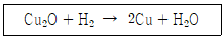
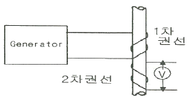
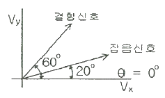

와전류비파괴검사기사 (2014-05-25 기출문제)
1과목: 비파괴검사 개론
1. 다음 중 빛의 강도를 나타내는 단위는?
- m2/s
- W/m2
- N/m2
- ppm
(정답률: 85%)

2. 자분탐상시험, 침투탐상시험, 와전류탐상시험과 비교하여 방사선투과시험의 주요 장점이 아닌 것은?
- 주로 내부 결함의 검출에 이용된다.
- 시험체 재질의 밀도 변화를 검출할 수 있다.
- 검사 결과를 반영구적으로 기록할 수 있다.
- 작업자가 쉽게 시험체에 접근하여 측정할 수 있다.
(정답률: 76%)
3. 잔류응력을 비파괴적으로 측정이 가능한 응력·변형률 측정방법은?
- 광탄성 피막법
- 응력 도료막법
- 홀로그래피법
- 자기스트레인 응력 측정법
(정답률: 89%)
4. 비파괴검사 중 육안검사에 대한 설명으로 올바른 것은?
- 육안검사는 시험체에 가장 먼저 작용하는 검사법이다.
- 육안검사는 표면결함 및 내부결함을 검출 가능하다.
- 육안 검사자는 근거리 시력이 좋으면 색맹이어도 지장이 없다.
- 눈의 분해능은 강하며 항상 일정하다.
(정답률: 87%)
5. 비파괴검사 중 와전류탐상시험으로 검출이 용이한 것은?
- 유리판의 표면 결함
- 금속판의 열처리 상태
- 유리봉의 표층부 결함
- 플라스틱판의 표층부 결함
(정답률: 84%)
6. 입자분산강화금속(PSM)의 제조방법이 아닌 것은?
- 내부산화법
- 열분해법
- 용융체 포화법
- 풀몰드 주조법
(정답률: 68%)
7. 로케웰 경도시험에서 압입자의 각도는 얼마인가?
- 60도
- 120도
- 136도
- 145도
(정답률: 71%)
8. 마그네슘에 대한 설명으로 틀린 것은?
- 산에 침식된다.
- 비중은 3.74이다.
- 용융점은 약 650℃이다.
- 조밀육방격자 금속이다.
(정답률: 72%)
9. 주조용 알루미늄 합금과 그에 따른 명칭이 다른 것은?
- 실루민(Silumin) : Al-Mg계 합금
- 라우탈(Lautal) : Al-Si-Cu계 합금
- 두랄루민(Duralumin) : Al-Cu-Mg-Mn계 합금
- 하이드로날륨(Hydronalium) : Al-Mg계 합금
(정답률: 58%)
10. Fe-C계 합금상태도에서 펄라이트(pearlite)가 형성되는 반응은?
- 공석반응
- 편석반응
- 공정반응
- 포정반응
(정답률: 63%)
11. 강의 조직 중에서 가장 큰 팽창을 하는 것은?
- 펄라이트(Pearlite)
- 소르바이트(Sorbite)
- 마텐자이트(Martensite)
- 오스테나이트(Austenite)
(정답률: 65%)
12. 주철에서 흑연화를 방해하는 원소는?
- Si
- Co
- Ni
- Cr
(정답률: 59%)
13. 가공용 알루미늄 합금 중 4000번대는 어느 합금계인가?
- Al-Cu계
- Al-Mn계
- Al-Si계
- Al-Mg계
(정답률: 54%)
14. 다음 중 감쇄능이 가장 우수한 재료는?
- 주강
- 금형강
- 공구강
- 회주철
(정답률: 76%)
15. 정련구리 중 보기와 같은 반응에 나타나는 현상은?

- 열간균열
- 템퍼칼러
- 수소취성
- 구리의 산화
(정답률: 87%)
16. 피복아크 용접에서 용접봉의 용융속도를 가장 적합하게 나타낸 것은?
- 단위 시간당 소비되는 용접봉의 길이 또는 무게
- 단위 시간당 용착되는 용착금속의 총중량
- 1시간당 소비되는 용접봉의 무게
- 1일에 소비되는 용접봉의 총 중량
(정답률: 78%)
17. 용접봉의 종류 기호 중 고산화티탄계를 나타내는 것은?
- 4301
- 4311
- 4313
- 4316
(정답률: 70%)
18. 피복아크 용접봉에 사용되는 피복제 성분 중 아크 안정의 기능을 가지는 것은?
- 페로크롬
- 페로망간
- 산화니켈
- 규산칼륨
(정답률: 59%)
19. 다음 중 자분탐상 검사를 할 수 어벗는 금속판은?
- 연강판
- 니켈(Ni)판
- 코발트(Co)판
- 오스테나이트계 스테인리스강
(정답률: 84%)
20. 아크 용저에서 용접입열 30000 J/cm, 용접전압이 40V, 용접전류 125A 일 때 용접속도는 몇 cm/min 인가?
- 10
- 20
- 30
- 40
(정답률: 63%)
2과목: 와전류탐상검사 원리
21. 와전류(Eddy Current)란 무엇인가?
- 코일에 흐르는 교류전류를 말한다.
- 자장의 방향이나 크기가 바뀔 때 도체내에 유도되는 폐(閉)전류를 말한다.
- 콘덴서에 흐르는 방전 전류를 말한다.
- 변압기의 2차 코일에 유도되는 전류를 말한다.
(정답률: 72%)
22. 와전류탐상 시험장치에 대한 검교정이 불필요한 경우는?
- 제조공정의 시작 시점
- 제조공정의 종료 시점
- 제조공정의 개별 품목마다
- 장비의 기능에 이상 발생시
(정답률: 74%)
23. 저항은 전도도와 어떤 관계인가?
- 저항은 전도도와 반비례 관계
- 저항은 전도도와 제곱에 비례 관계
- 저항은 전도도와 제곱에 반비례 관계
- 저항은 전도도와 비례 관계
(정답률: 74%)
24. 코일의 임피던스에 영향을 미치는 인자들로 구성된 것은?
- 전도도, 투자율, 시험체의 형상
- 밀도, 투자율, 주파수
- 주파수, 유전율, 시험체의 형상
- 열전도도, 전도도, 투자율
(정답률: 72%)
25. 어떤 재료의 특성주파수가 150Hz 이고, f/fg의 비가 10 일 때 시험주파수는 얼마인가?
- 0.06 Hz
- 15 Hz
- 1500 Hz
- 15000 Hz
(정답률: 71%)
26. 와류탐상시험을 수행할 때 시험체에서 주파수가 100 kHz일 때 침투깊이 3.0mm였다. 주파수가 10kHz 일 때, 와전류의 침투깊이는 얼마인가?
- 7.5 mm
- 8.5 mm
- 9.5 mm
- 10.5 mm
(정답률: 66%)
27. 와전류탐상시험에서 평면형 탐촉자를 사용하여 판재를 검사할 때 탐촉자와 시험체 사이의 간격 변화로 인하여 나타나는 신호를 무엇이라 하는가?
- 표피효과
- 충진율
- 리프트-오프 효과
- 가장자리 효과
(정답률: 85%)
28. 와전류탐상시험에서 관통코일을 이용하여 균일한 단면을 가진 시험품에 대하여 결함을 탐상할 때, 시험품의 모서리 부근으로 관통코일을 접근시키면 와전류신호가 발생한다. 이러한 현상이 발생하는 요인은?
- 위상분리
- Lift - off
- Fill factor
- End effect
(정답률: 93%)
29. 와전류탐상시험에서 코일의 임피던스에 영향을 주는 인자와 가장 거리가 먼 것은?
- 시험체의 저항률
- 시험체의 투자율
- 시험체의 치수
- 시험체의 탄성률
(정답률: 78%)
30. 코일에 흐르는 교류 주파수를 2배로 하면 유도리액턴스는 ( )하고 임피던스의 위상각은 ( )한다. 괄호 안에 알맞은 것은?
- 반으로 감소, 감소
- 2배로 증가, 증가
- 반으로 감소, 증가
- 2배로 증가, 감소
(정답률: 62%)
31. 와전류탐상시험에서 시험체에 적용되는 검사 코일의 자력 H(A/m)과 시험체의 자속밀도 B(T)의 비는 시험체의 무엇을 결정하는데 사용되는가?
- Fill factor
- Lift - off
- 투자율
- 전도도
(정답률: 66%)
32. 다음 중 와전류탐상시험의 표준침투깊이에 대한 설명으로 틀린 것은?
- 주파수의 제곱근에 반비례한다.
- 전도율의 제곱근에 반비례한다.
- 투자율의 제곱근에 반비례한다.
- 전류밀도의 제곱근에 반비례한다.
(정답률: 60%)
33. 관통 코일을 이용한 비자성체의 와전류탐상시험에서 검사속도가 빠를수록 기록계에 나타나는 결함 신호의 진폭이 작아지는 이유는?
- 응답성 이하의 낮은 주파수 성분을 갖는 결함 신호가 입력되기 때문
- 응답성 이상의 높은 주파수 성분을 갖는 결함 신호가 입력되기 때문
- 이송장치의 빠른 이동으로 잡음 제거 능력이 저하되기 때문
- 의사 신호와 결함 신호가 혼합되어 분별 능력이 저하되기 때문
(정답률: 61%)
34. 와전류탐상시험으로 관의 처음부터 끝까지 일정한 깊이와 폭의 노치(notch)가 있는 시험편을 자기비교형 차동코일로 와전류탐상검사를 하면 검출되는 신호는?
- 불규칙한 신호발생
- 점진적으로 증가와 감소하는 신호 발생
- 신호의 변화가 거의 없음
- 급격한 신호의 변화 발생
(정답률: 62%)
35. 와전류의 침투깊이에 대한 설명으로 가장 옳은 것은?
- 재료와 무관하게 항상 일정
- 재료에 따라 일정하지 않음
- 비자성체에서 항상 일정
- 자성체에서 항상 일정
(정답률: 82%)
36. 다음 중 와전류탐상시험으로 발견할 수 없는 것은?
- 관의 외경 변화
- 관 표면에 존재하는 균열
- 봉재 표면에 존재하는 겹침
- 지름 20cm 강봉 중앙에 존재하는 작은 기공
(정답률: 84%)
37. 와류탐상검사에서 시험편의 전기적, 자기적 변수의 설명으로 옳은 것은?
- 전도성은 자기적 변수이다.
- 치수변화와 투자성은 자기적 변수이다.
- 치수변화는 전기적 변수이다.
- 치수변화와 전도성은 전기적 변수이다.
(정답률: 43%)
38. 그림에서 1차 권선에 흐르는 교류는 자기장을 형성하고 막대기에 와전류 흐름을 일으킨다. 이 때 2차 권선에 형성되는 전압 크기를 결정하는 인자가 아닌 것은?

- 막대기의 와전류
- 1차 권선
- 발진기
- 전압기
(정답률: 57%)
39. 와류탐상시험의 표준시험편을 결정할 때 중요하지 않은 사항은?
- 표준시험편은 시험체와 동일한 크기 및 형상이어야 한다.
- 표준시험편은 시험체와 동일한 열처리 과정을 거친 것이라야 한다.
- 표준시험편은 부식방지를 위해 표면처리된 것이라야 한다.
- 표준시험편의 표면 상태는 시험편과 동일한 상태라야 한다.
(정답률: 66%)
40. 와전류탐상시험에서 시험 코일의 임피던스 변화의 검출 방법에 따른 분류방법에 해당되지 않는 것은?
- 임피던스 시험
- 위상분석 시험
- 변조분석 시험
- 펄스-에코 시험
(정답률: 74%)
3과목: 와전류탐상검사 시험
41. 내삽형 코일로 내면 결함신호와 외면 결함신호를 분리하기 위해서 위상차를 증가시키기 위한 방법은?
- 충진도를 증가시킨다.
- 주파수를 증가시킨다.
- 검사 속도를 감소시킨다.
- 자기포화형 코일을 사용한다.
(정답률: 60%)
42. 다음 중 한꺼번에 여러 주파수로 동시에 와전류탐상검사 하는 장비는?
- 다중 주파수 장비
- 단일 주파수 장비
- 2원식 장비
- 멀티 스트립챠트
(정답률: 81%)
43. 관통형 시험코일의 장점으로 틀린 것은?
- 프로브 마모 염려가 없다.
- 고속의 작업이 가능하다.
- 볼트 구멍 시험에 우수하다.
- 한 번에 전부위를 판독할 수 있다.
(정답률: 71%)
44. 신호 대 잡음비(S/N비)를 증가시키기 위해 사용하는 방법이 아닌 것은?
- 시험 주파수의 변화
- 시험 장비의 출력을 증가시킴
- 위상 식별
- 시험 장비에 필터 회로 사용
(정답률: 47%)
45. 와전류탐상 시험결과 의사지시의 원인이 아닌 것은?
- 외부 전기잡음
- 자기포화 부족
- 시험체 표면의 불균일한 지시
- 동일 위치에 존재하는 불연속 재질
(정답률: 39%)
46. 와전류 탐상장치에서 시험주파수는 무엇으로 설정하는가?
- 발진기
- 증폭기
- 이상기
- 동기검파기
(정답률: 56%)
47. 어떤 재료에서 10 kHz에 대한 침투깊이가 0.75mm 라면, 다른 조건이 동일할 때 1kHz에 대한 침투깊이는 약 몇 mm 인가?
- 0.075
- 0.24
- 1.2
- 2.4
(정답률: 47%)
48. 와전류탐상검사시 균열검사 및 비철금속의 분류에 일반적으로 사용하는 주파수 범위는?
- 0.5 kHz ~ 10 MHz
- 10 MHz ~ 20 MHz
- 20 MHz ~ 50 MHz
- 50 MHz ~ 100 MHz
(정답률: 60%)
49. 병렬 L-C 회로에서 인덕턴스가 80×10-6[H]이고 커패시턴스 5×10-9[H]이며, 저항은 무시할 만큼 작다고 할 때, 와전류탐상시험을 위한 공진주파수는 약 얼마인가?
- 200 kHz
- 252 kHz
- 2000 kHz
- 2520 0
(정답률: 60%)
50. 이음매 없는 강관의 와전류탐상검사용 대비시험편 가공방법으로 틀린 것은?
- 노치 기계가공
- 드릴구멍 가공
- 기공 용접가공
- 각진 홈 기계가공
(정답률: 77%)
51. 열교환기 배관의 부식 정도를 알기 위한 와전류탐상기의 시험 코일은?
- 관통형 코일
- 프로브형 코일
- 내삽형 코일
- 외삽형 코일
(정답률: 66%)
52. 와류탐상시 회전형탐촉자(Spining probe)의 특징으로 옳은 것은?
- 검사속도의 증가
- 내부 Piping이나 파열의 검출
- 표면과 표면근방의 개재물 검출
- 관통 와류탐상장치에서 검출하기 어려운 긴 손상 검출
(정답률: 34%)
53. 재료의 투자율에 대한 설명 중 틀린 것은?
- 재료의 물질 상수이다.
- 강자성체에서 투자율은 비교적 큰 값을 가진다.
- 비자성체의 투자율은 재료의 전기 전도도에 비례하여 증가한다.
- 강자성체의 투자율은 재료의 기계 가공 및 열처리 이력에 따라 달라질 수 있다.
(정답률: 68%)
54. 다음 중 결함 검출이 가장 용이한 경우는?
- 결함이 와전류의 방향에 나란하게 있을 때
- 결함이 와전류의 방향에 수직하게 있을 때
- 와전류의 위상이 코일전류의 위상과 90도 차가 있을 때
- 와전류의 위상과 코일전류의 위상이 서로 같을 때
(정답률: 71%)
55. 결함신호와 잡음신호의 벡터도를 그림으로 표시하였다. 신호대 잡음비를 최대가 되게 하는 동기검파 위상각은 얼마인가? (단, 위상각의 설정은 X축, 출력은 Y축 성분으로 한다.)

- 20°
- 40°
- 60°
- 80°
(정답률: 63%)
56. 와전류를 이용한 시험에서 리프트오프 효과가 이용되는 것은?
- 비전도성 피막의 두께측정
- 자성체의 재질판별
- 비장성체의 재질판별
- 탐상시험
(정답률: 72%)
57. 와류탐상시험에서 다음의 어느 것이 신호의 위상을 변화시키는가?
- 고주파 증폭기의 이득변화와 저항의 변화
- 장치의 감도설정 변화와 저항의 변화
- 리젝션의 크기와 저항의 변화
- 시험코일의 유도리액턴스와 저항의 변화
(정답률: 64%)
58. 전도도의 변화를 X축에, 투자율의 변화를 Y축에 나타내는 와전류탐상시험의 출력 표시형태는?
- Vector Ponit 방식
- Ellipse 방식
- Linear Time Base 방식
- Chart Record 방식
(정답률: 66%)
59. 코일에 발생하는 자계의 강도는 코일의 무엇에 비례하는가?
- 코일의 감은수와 전류
- 코일의 감은수와 코일의 크기
- 코일의 크기와 저항
- 전류와 저항
(정답률: 63%)
60. 열교환기, 복수기 등 튜브의 와전류탐상시험 결과로 나타나는 결함의 종류 중 튜브의 진동에 의한 결함은?
- 부식
- 침식
- 피팅
- 찰과부식
(정답률: 68%)
4과목: 와전류탐상검사 규격
61. 보일러 및 압력 용기에 대한 관 제품의 와전류탐상검사(ASME Sec. V Art. 8 App. 1)에서 규정하고 있는 프로브의 공칭속도로 가장 적절한 것은?
- 최소 254 mm/s
- 최소 304 mm/s
- 최대 355 mm/s
- 최대 406 mm/s
(정답률: 50%)
62. 보일러 및 압력 용기에 대한 관 제품의 와전류탐상검사(ASME Sec. V Art. 8)에서 시험보고서를 작성할 때 다음 중 포함되지 않아도 되는 사항은?
- 시험주파수
- 프로브의 크기와 종류
- 관의 재질, 직경 및 두께
- 자연 결함의 깊이 및 길이
(정답률: 68%)
63. 강의 와류탐상 시험방법(KS D 0232)에서 규정하고 있는 시험코일의 표시방법에 따른 올바른 표시기호는?
- MA-20-24
- Ca-24-20
- BS-20-24
- BM-24-20
(정답률: 73%)
64. 보일러 및 압력 용기에 대한 관 제품의 와전류탐상검사(ASME Sec. V Art. 8 App. 1)에 따라 장치교정을 할 때 절대보빈코일로 교정을 한다면 시험편의 벽 관통구멍 신호는 보통 어느 방향으로 나타나돌고 하고 있는가?
- 수평 방향 위상각 40°
- 수직 방향 위상각 40°
- 시계방향으로 45°
- 반 시계반향으로 45°
(정답률: 38%)
65. 동 및 동합금관의 와류탐상 시험방법(KS D 0214)에서 규정하는 시험의 준비 가운데 자기포화가 필요한 경우는?
- 동합금 용접관
- 이음매 없는 니켈 동합금관
- 이음매 없는 동합금관
- 니켈 동합금 용접관
(정답률: 56%)
66. 동 및 동합금간의 와류탐상 시험방법(KS D 0214)에서 제시하고 있는 비교시험편내의 결함에 대한 설명으로 틀린 것은?
- 비교시험편의 결함은 시험편에 만든 인공결함이다.
- 줄홈의 깊이 허용차는 ±10% 이다.
- D-1.0 드릴 구멍의 치수 허용차는 ±0.1mm 이하로 한다.
- 시험편의 드릴구멍은 관의 길이 방향에 10개로 하며, 각각의 간격 및 관끝에서의 거리는 시험속도 조건에 따른 신호분리와는 상관없이 임의로 가능하다.
(정답률: 72%)
67. 강관의 와류탐상검사 방법(KS D 0251)에서 비교 시험편의 인공흠 중 줄흠의 가공으로 틀린 것은?
- 각도는 60°로 한다.
- 길이는 20mm 이하로 한다.
- 깊이는 호칭 두께의 5%로 한다.
- 깊이의 허용차는 ±10%로 한다.
(정답률: 45%)
68. 강의 와류탐상 시험방법(KS D 0232)에 따라 바깥지름이 21mm인 원형봉강을 와류탐상시험할 때 권선의 안지름이 22mm이고, 권선의 바깥지름의 24mm인 시험코일을 사용하였다면 충전율은 약 얼마인가?
- 76%
- 83%
- 91%
- 95%
(정답률: 57%)
69. 강의 와류탐상 시험방법(KS D 0232)에서 규정하고 있는 시험코일의 표시방법으로 옳은 것은?
- 시험코일의 형식에는 상호유도형이 있다.
- 시험코일의 방식으로 상호비교방식이 있다.
- 시험코일 권선의 평균지름은 %로 나타낸다.
- 시험코일을 표시할 때는 시험코일 권선의 간격을 나타내어야 한다.
(정답률: 35%)
70. 보일러 및 압력 용기에 대한 와전류탐상검사(ASME Sec. V Aet. 26 SE-243)에서 대비 표준시험편에 반지름 방향으로 100% 관통한 드릴 구멍 3개의 인공 불연속을 만드는 경우 이 드릴 구멍의 횡방향 간격은 연속하여 몇 도마다 일정한 간격으로 하여야 하는가?
- 30도 간격
- 60도 간격
- 90도 간격
- 120도 간격
(정답률: 72%)
71. 보일러 및 압력 용기에 대한 관 제품의 와전류탐상검사(ASME Sec. V Art. 8 App. Ⅱ)에서 아날로그 장비의 교정 확인사항으로 옳은 것은?
- 구동코일에서의 오실레이터 출력 주파수는 표시된 주파수의 ±10% 이내이어야 한다.
- 음극선관의 수직 및 수평 선형성은 입력 전압 방향의 ±10% 이내이어야 한다.
- 테이프 레코드로부터의 출력 전압 비율은 테이프 레코드 각 채널의 대한 입력 전압의 ±10% 이내이어야 한다.
- 스트립 차트 레크드로부터의 차트 속도는 나타난 값의 ±10% 이내이어야 한다.
(정답률: 47%)
72. 강의 와류탐상 시험방법(KS D 0232)에서 규정한 사항 중 충전율을 구하는 식은? (단, η : 충전율, d : 시험체의 바깥지름(mm), D : 시험코일 권선의 평균지름(mm))
- η = (D2/d2)×100
- η = (d2/D2)×100
- η = d2/(d+D)2
- η = D2/(d+D)2
(정답률: 65%)
73. 강관의 와류탐상검사 방법(KS D 0251)에서의 시험적용 대상 품목으로 지정되어 있는 것은?
- 바깥지름 4 – 180 mm, 두께 10 – 30 mm인 용접강관
- 바깥지름 4 – 180 mm, 두께 5 – 20 mm인 이음매 없는 강관
- 바깥지름 20 – 300 mm, 두께 1.0 – 20 mm인 단접강관
- 바깥지름 4 – 180 mm, 두께 0.7 – 20 mm인 용접강관
(정답률: 35%)
74. 강관의 와류탐상검사 방법(KS D 0251)에서 인공 홈에 대한 호칭 방법 및 각 호칭에 대한 설명으로 옳은 것은?
- D-2.0, 드릴 구멍 지름 2.0mm
- N-20, 네모홈 깊이 2.0mm
- N-50, 네모홈 나비 5.0mm
- F-25, 줄홈 깊이 2.5mm
(정답률: 66%)
75. 강의 와류탐상 시험방법(KS D 0232)에서 시험장치에 대한 설명으로 틀린 것은?
- 시험장치는 탐상기, 시험코일, 기록장치, 이송장치 및 자기포화장치로 구성된다.
- 탐상기는 발진기, 전기장치 및 표시장치 등으로 구성된다.
- 탐상기의 사용 환경온도는 0℃에서 40℃의 범위이며 ±15%의 전원전압의 변동에서 안정되게 작동하여야 한다.
- 시험주파수는 10~1024kHz의 범위이어야 한다.
(정답률: 57%)
76. 보일러 및 압력 용기에 대한 관 제품의 와전류 탐상검사(ASME Sec. V, Art. 8)에서 불연속의 깊이는 주로 탐상신호의 어떤 부분에 의해 측정되는가?
- 위상각
- 수평축의 강도
- 수직축의 강도
- 20% 평저공과의 강도 비교
(정답률: 63%)
77. 강관의 와류탐상검사 방법(KS D 0251)에서 인공 흠의 종류, 모양 및 치수에 대한 설명으로 옳은 것은?
- 용접스테인레스 강관의 줄흠 깊이 최소 값은 0.3mm이다.
- 열간 가공 이음매없는 강관의 각흠 깊이 최소 값은 0.2mm 이다.
- 전기저항 용접 강관의 줄흠 깊이 최소 값은 0.3mm 이다.
- 냉간가공 이음매없는 강관의 각흠 깊이 최소 값은 0.3mm 이다.
(정답률: 15%)
78. 동 및 동합금관의 와류탐상 시험방법(KS D 0214)에 따른 시험의 기록에 포함되어야 할 사항이 아닌 것은?
- 시험 연월일
- 관의 치수
- 시험품 갯수
- 탐상 주파수
(정답률: 79%)
79. 보일러 및 압력 용기에 대한 관 제품의 와전류탐상검사(ASME Sec. V Art. 8 App. Ⅲ)에서 코팅 두께는 교차되는 1/4인치 이내에 범위에서 어떻게 측정하는가?
- 최초값으로 결정한다.
- 3회 측정값의 평균치로 한다.
- 5회 측정값의 평균치로 한다.
- 10회 측정값의 평균치로 한다.
(정답률: 74%)
80. 동 및 동합금관의 와류탐상 시험방법(KS D 0214)에 의한 동 및 동합금관을 와류탐상시험할 때 합격으로 판정할 수 있는 것은?
- 대비결함의 신호와 동등 이상의 신호가 검출되지 않은 동관
- 교정마크가 아닌 결함으로 대비결함의 신호보다 동등 이상인 동관
- 비트 절삭 흔적이 아닌 결함으로 대비결함의 신호보다 동등 이상인 동합금관
- 상처가 아닌 결함으로 육안검사시 해로움이 있는 것으로 판단되는 경우
(정답률: 78%)